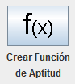
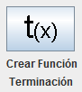

Definir Función permite definir la función de aptitud y la función de terminación.
Para definir la función de aptitud primero debe pisar sobre el botón que se muestra en la imagen:
Para definir la función de terminación primero debe pisar sobre el botón que se muestra en la imagen:
La función de aptitud es de caracter obligatorio para el desarrollo del Algoritmo Genético, mientras que la función de Terminación no es necesaria su implementación.